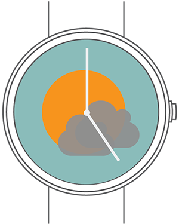
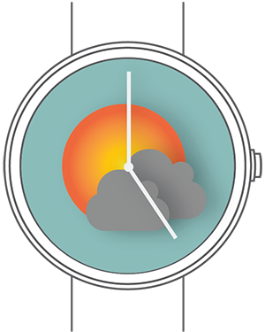
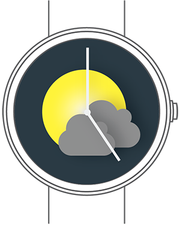
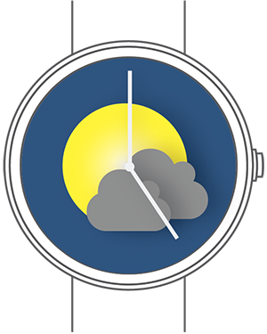

It is easy to forget what temperature, or what kind of weather it was supposed to be today. Weathery, the weather watch interface will never let you walk in the snow with your new pair of shoes on.
Having numbers can help, but it is not as efficient as the visuals. Weathery shows you the current weather, and the weather in the near future on your watch screen.
But of course, numbers do matter. You never know if it is going to be extremely cold under a sunny sky. On Weathery, you can just tap on the screen to see the temperature and the date.
I am that kind of person who always forgets to check the weather, and end up with soaked Converse by the time I get home. So I thought, "Wouldn't it be nice if I could check the time and the weather at the same time?"
The first time I came up with this interface, I was thinking of a "flat UI design". By "flat", I mean not much depth and no shadows. So I included zero drop shadow, and a little opacity change in the clouds. When I was done, I realized that this interface looked banal - almost like a child's drawing.
That is why I started playing with drop shadows and gradients. The sun needed to look more like the sun, and the clouds needed to look more like clouds.
Another challenge I faced was depicting the night sky with a specific colour. Sky during the day is usually represented with lighter shade of blue, so I decided to use a darker shade for the night sky. But "dark" was too dark.
After some research, I learned that night sky or lighting can be depicted with even a lighter shade of blue ( just like how Van Gogh or Miyazaki did it ).
I went on and created the motion graphics ( displayed on top of the page ) to showcase how the interface really works.